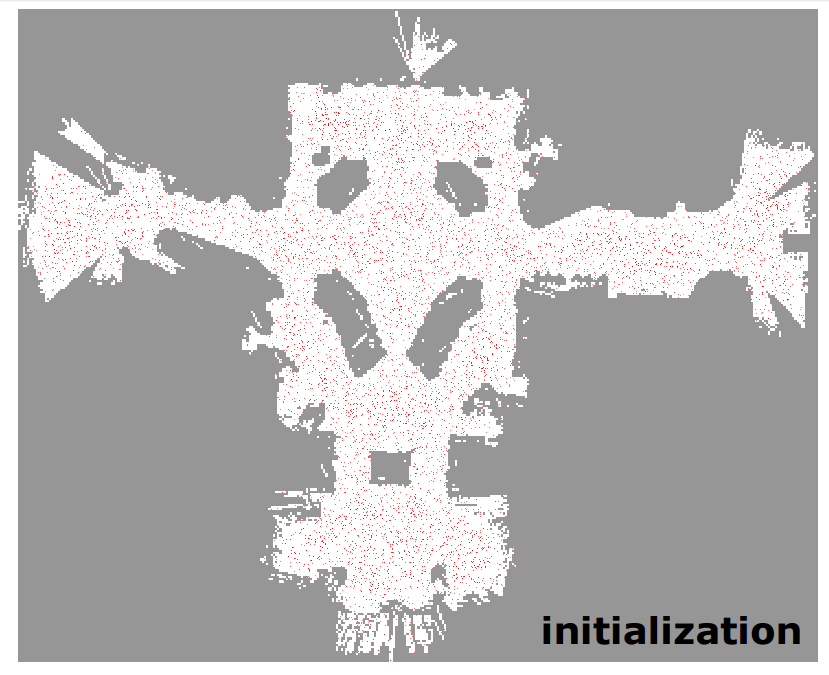
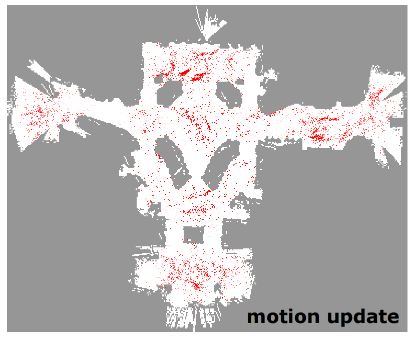
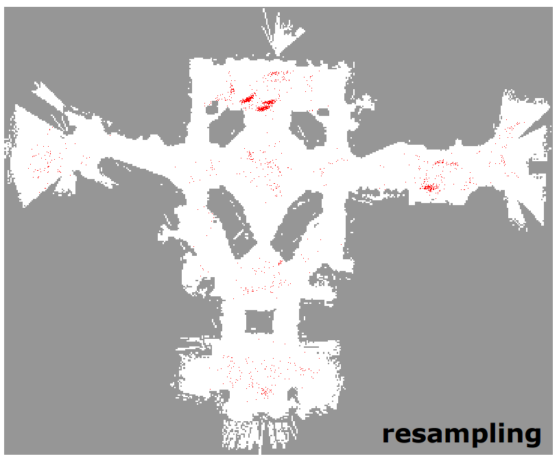
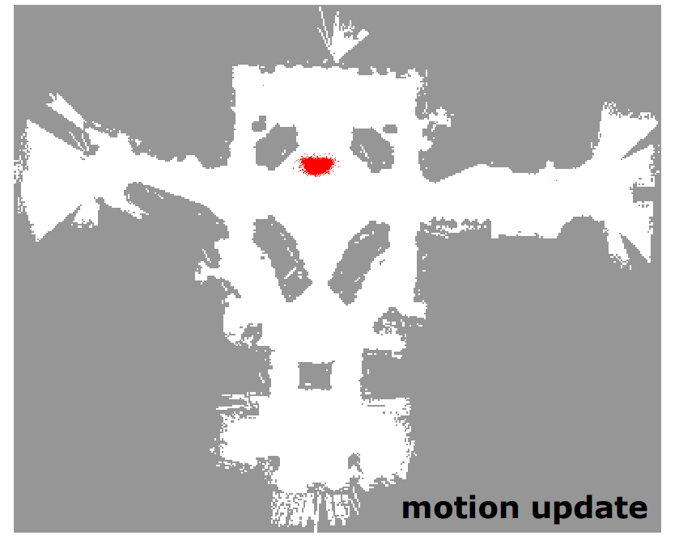

Slam Theory
SLAM or Simultaneous Localization And Mapping is a means to explore and map the surrounding environment of the robot, while estimating the pose of the robot itself using the sensors mounted on the robot and different algorithms.
The pose is estimated using Encoders and Intertial Measurement Units (IMU). The encoders caluclates the position of the robot using the dead reckoning method which uses the rotational values of the wheels. This may result in a large error margin which is offset by the values provided by the IMU value.
The accuracy of the values can be further increased with distance sensors used when creating the map. The pose estimation methods used for our application is Monte Carlo localization using particle filter.
Particle filter
In object tracking, the particle filter is one of the most popular algorithms used localization tasks. Localization is a way to determining where the robot is in relation to the environment. Most algorithms allow for high accuracy localization within a linear system, while the particle filter allows for the use of pose estimation in a non-linear real world systems. The algorithm is akin to a brute force method, with its simulation based try-and-error method. The estimated values generated by the probability distribtuion in the system is reperesented in a particle format which prompted the particle filter name for the algorithm. (aka: Sequential Monte Carlo (SMC) method, Monte Carlo method)
Similar to many other pose estimation algorithms the particle filter uses the odometry values and the values from the distance sensors to estimate the current pose of the robot within the environment provided by the system, assuming that the error margins are calculated.
In the particle filter method, the uncertain pose is described by particles called samples. initially these particles are randomly placed, but as we recieve motion model and probability of our robot location , we can start to move these particles with weights calculated from the actual measurements, and gradually decrease the noise to have a precise pose.
For our application, each of the particle is represented with 4 values: pose(x, y, i), and weight. (i representing the number of the particle). The particle filter goes through 5 steps, repeating steps 2-5 until the desired precision is met.
1.Initialization
Without a supervised input, the robot does not have any initial pose information. Hence the particles are randomly arranged within a specific range with N particles. Initially each of the particles have 1/N weight and the sum of the weight of particles is 1. The N is empirically determined. If the initial position is explicitly defined, the particles may be arranged near the robot instead of randomly scattered.
{kind=link}
2.Prediction
With the odometry and sensory values and noise, graudally move (predict) each particles location (based on the system model).
{kind=link}
3.Update
Based on the measured sensor information, the probability of each particle is calculated and the weight value of each particle is updated based on the calculated probability.
{kind=link}
4.Pose Estimation
The position, orientation, and weight of all paricles are used to calculate the average weight median value, an the maximum weight value for estimating pose of the robot.
5.Resampling
Generate new particles that inherit the pose information of the weighted particles. The number of particles must be maintained, hence, with the addition of new particles particles with less weight are removed.
{kind=link}
By repeating the steps 2 ~ 5 we may end up with visualization below:
{kind=link}
As seen within the picture, the robot pose is estimated and located in relation to its surroundings with particles.
To conclude the contents mentioned, the SLAM method is a way of mapping and localizing the position of the robot coninuously. Within our robot, we use odometry information with IMU sensors and LIDAR sensor for distance sensor. The error margins for our robot position is first calculated with dead reckoning method, which is further corrected with Particle Filtering pose estimation methodology. By the result of SLAM we should have the pose of the robot and sensor, obstacle information, and occupancy grid map.
pictures taken from: http://jinyongjeong.github.io/2017/02/22/lec11_Particle_filter/